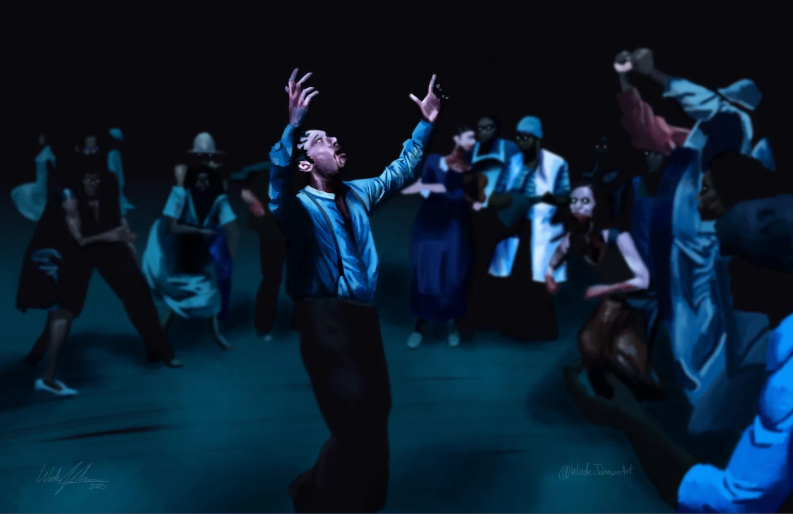

Prints & Artwork
Browse available prints and items through Wade's existing online shop.
Visit the Etsy shop →Every illustration begins with inspiration—a character, a story, a place, or an idea. Through color, atmosphere, and imagination, Wade Johnson brings his own perspective to the worlds he loves.

Wade Johnson is a digital artist specializing in character illustrations, fantasy environments, and story-inspired artwork influenced by literature, film, gaming, and folklore.



Every pet has a personality worth celebrating. Wade creates custom digital portraits that capture the unique character of our beloved companions.


Every finished illustration is the result of countless creative decisions. Discover how Wade develops his ideas, builds atmosphere, and brings his artwork to completion.


Browse available prints and items through Wade's existing online shop.
Visit the Etsy shop →Interested in a character, portrait, cover illustration, or custom piece? Contact Wade for current options and pricing.
Explore commissioned artwork → · Ask about a commission →